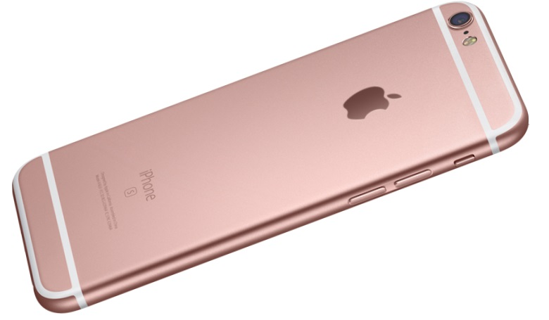
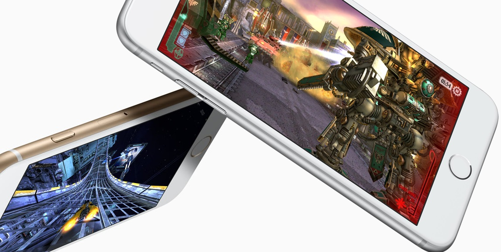
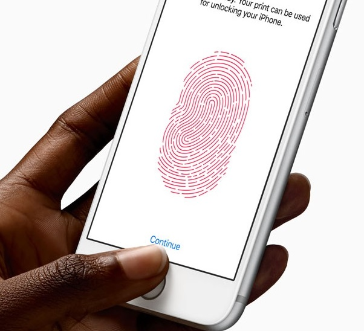

3D TouchDe când începi să folosești iPhone 6s, simți că experimentezi ceva cu totul nou. Cu o simplă apăsare, 3D Touch îți permite să faci mai multe ca niciodată. Live Photos dă viață amintirilor într-un mod incredibil de realist. Și acesta e doar începutul. Dacă-l analizezi în profunzime, iPhone 6s inovează la fiecare nivel. 
O nouă generație Multi-Touch.Primul iPhone a adus lumii Multi-Touch, schimbând pentru totdeauna modul în care oamenii interacționează cu tehnologia. Cu 3D Touch, poți să faci lucruri care nu au fost niciodată posibile înainte. Acesta simte cât de tare apeși pe ecran, permițându-ți să realizezi acțiuni esențiale mai rapid și mai simplu. Și îți oferă feedback în timp real sub forma unor pulsații subtile de la un Taptic Engine complet nou. Live Photos. Amintirile prind viață.Cea mai populară cameră din lume este mai avansată ca niciodată. Camera iSight de 12 MP face poze clare și detaliate. Înregistrează video 4K, la o rezoluție de până la de patru ori mai mare decât un clip HD de 1080p. De asemenea, iPhone 6s face selfie-uri demne de un autoportret cu noua cameră FaceTime HD de 5 MP. Și are acum Live Photos, un nou mod de a retrăi cele mai dragi amintiri. Acesta surprinde momentele de dinaintea și de după clipa în care ai făcut poza, iar tu le pui în mișcare cu o simplă apăsare. 
A9. Cel mai avansat cip văzut vreodată la un smartphone.iPhone 6s are un cip A9 de 64 biți proiectat special. El oferă performanță care înainte era posibilă numai pe computerele desktop. Vei avea acum parte de performanță CPU cu până la 70% mai bună și performanță GPU cu până la 90% mai bună pentru toate jocurile și aplicațiile tale grafic-intensive. iPhone atinge noi limite.Inovația nu se vede mereu cu ochiul liber, dar uită-te mai atent la iPhone 6s și vei observa îmbunătățiri fundamentale. Carcasa e fabricată dintr-un aliaj nou de aluminiu Seria 7000 — același tip folosit în industria aerospațială. Sticla ecranului e cea mai rezistentă și mai durabilă sticlă folosită la un smartphone. Iar o nouă culoare, roz auriu, e disponibilă acum alături de gri stelar, argintiu și auriu. 
Siguranța avansată îți poartă amprenta.Folosind un senzor de recunoaștere a amprentelor extrem de avansat, care acum e mai rapid și mai bun, Touch ID îți deblochează telefonul ușor și sigur. |